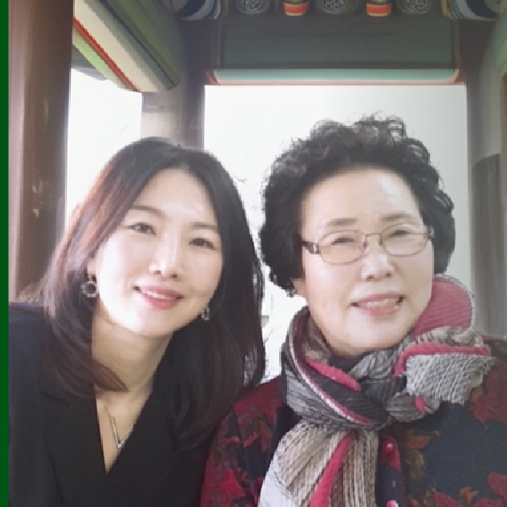
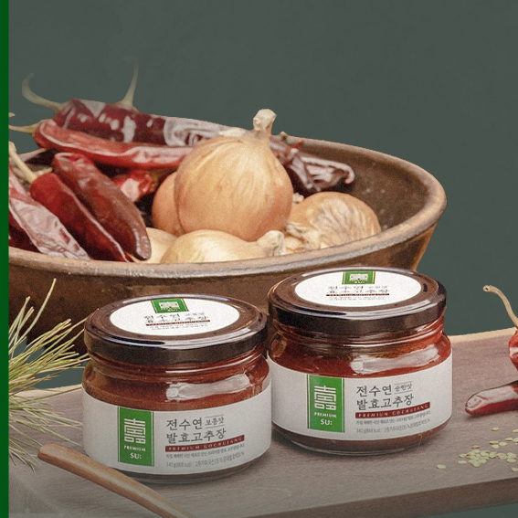
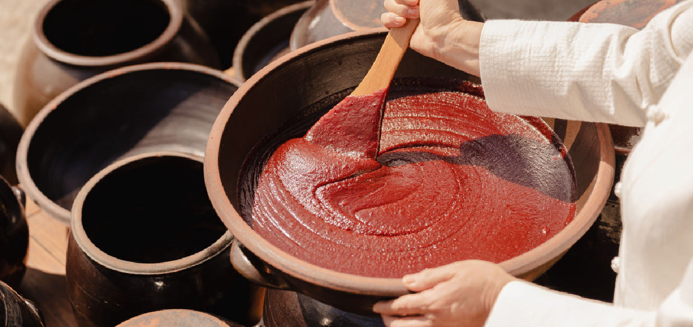
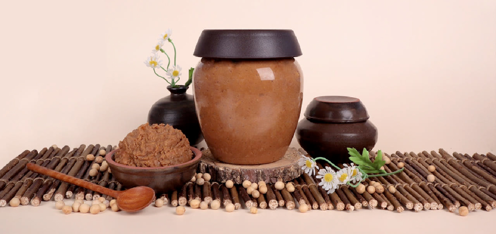
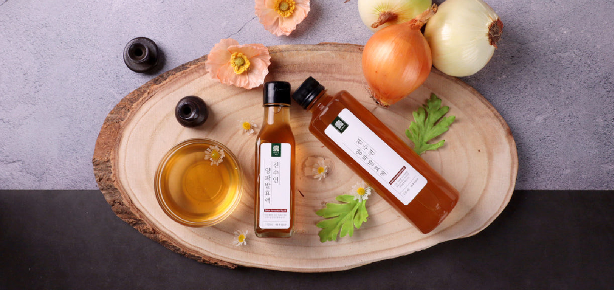

Jeon Su-yeon Fermented
Gochujang
Jeon Su-yeon Fermented Gochujang is a wholesome and carefully crafted Korean chili paste made with onion fermentation extract that has been naturally aged and fermented for over one year using onions grown on our own farms. It is further enriched with premium Korean red pepper powder sourced through a rigorous contract-farming selection process.
-

Company IntroductionAt BK BIO FOOD, we foster a development-driven corporate culture built on extensive experience in product innovation. Leveraging our expertise across a wide range of product development projects, we create differentiated products, high-value-added offerings, and distinctive designs that closely align with market trends and customer needs.
-

Key StrengthsBK BIO FOOD is committed to responding quickly and effectively to customer needs. We continuously invest a significant portion of our revenue in research and development (R&D), enabling us to conduct extensive market research and in-depth analysis.
-

01 Jeon Su-yeon
Fermented GochujangA wholesome Korean chili paste crafted with
fermented onion extract naturally aged for over one year. -

02 Jeon Su-yeon
SsamjangA rich and savory traditional Korean ssamjang
crafted with premium Korean ingredients. -

03 Jeon Su-yeon
Onion PestoA premium onion pesto developed using Jeon Su-yeon’s fermentation expertise,
built upon years of crafting traditional Korean fermented condiments.